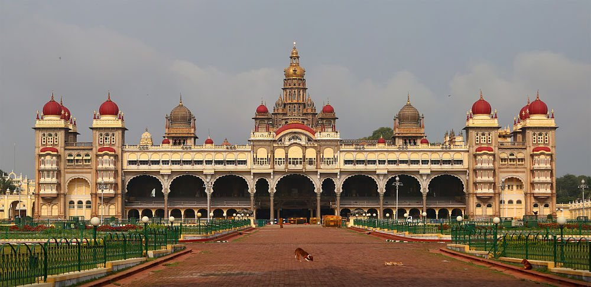
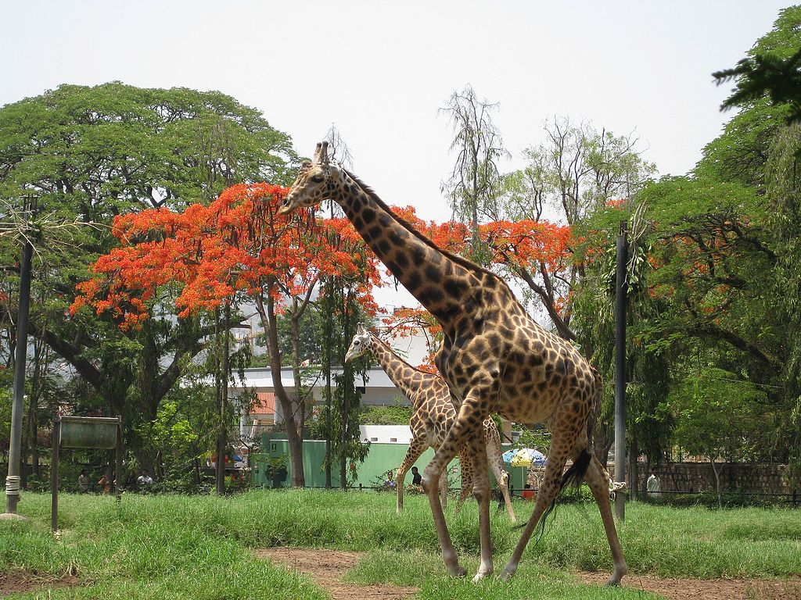
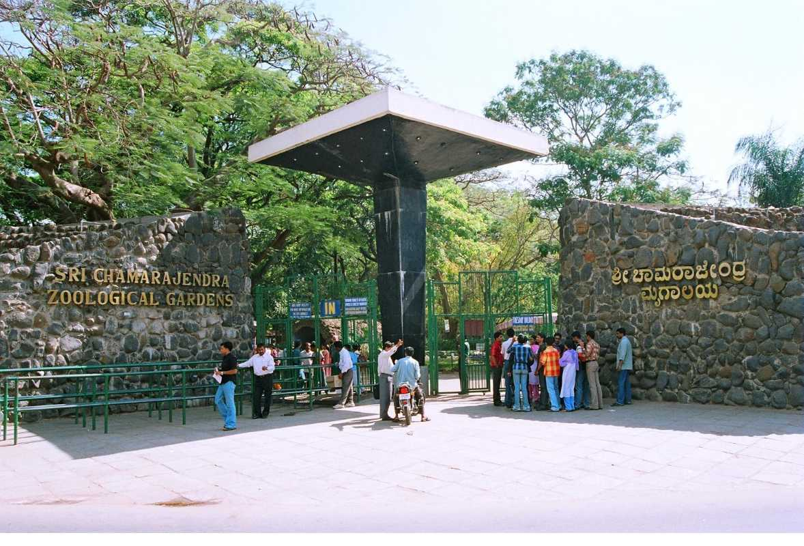
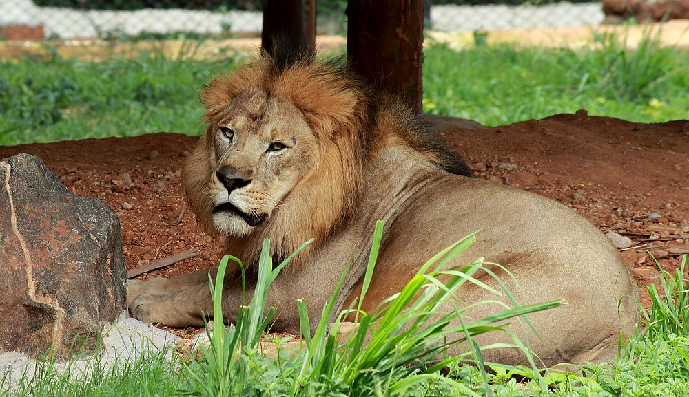
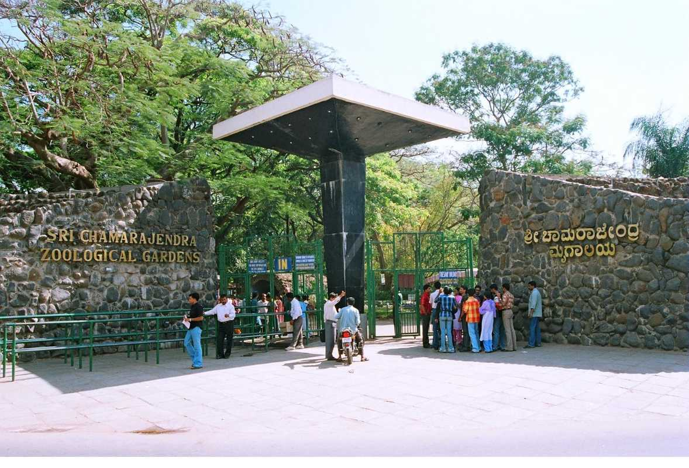
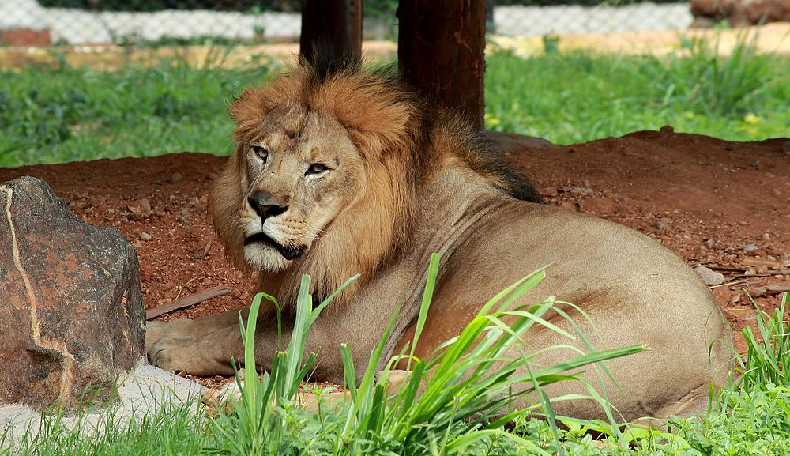
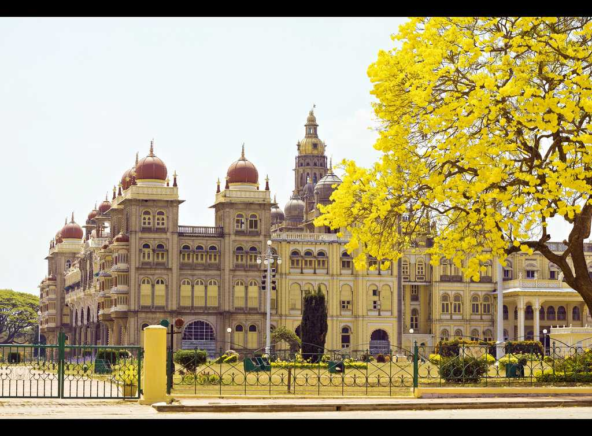
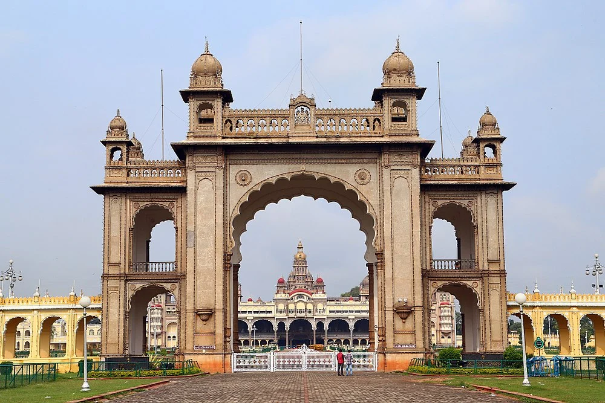
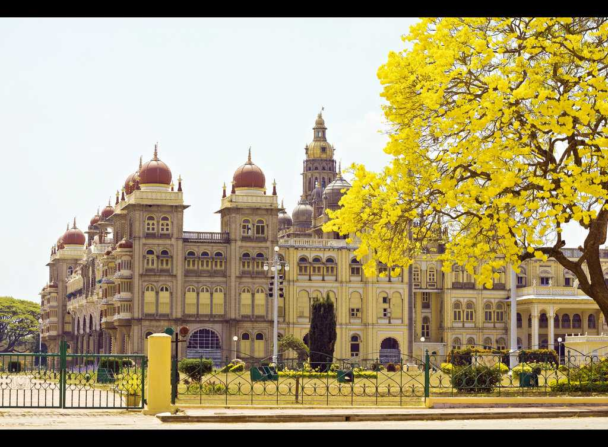
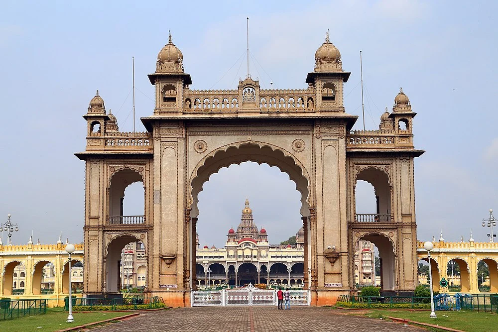

*** ABOUT MYSORE CITY IN KARNATAKA
Mysore, officially Mysuru , is a city in the southern part of the state of Karnataka, India Mysore city is geographically located between 12° 18′ 26″ north latitude and 76° 38′ 59″ east longitude. It is located at an altitude of 740 m (2,427 ft).Mysore is located in the foothills of the Chamundi Hills about 145.2 km (90 mi) towards the southwest of Bangalore and spread across an area of 152 km2 (59 sq mi). Mysore City Corporation is responsible for the civic administration of the city, which is also the headquarters of the Mysore district and the Mysore division.t served as the capital city of the Kingdom of Mysore for nearly six centuries from 1399 until 1956. The Kingdom was ruled by the Wadiyar dynasty, with a brief period of interregnum in the late 18th century when Hyder Ali and Tipu Sultan were in power. The Wadiyars were patrons of art and culture. Tipu Sultan and Hyder Ali also contributed significantly to the cultural and economic growth of the city and the state by planting mulberry trees introducing silk in the region and fighting 4 Anglo-Mysore wars against the British. The cultural ambience and achievements of Mysore earned it the sobriquet Cultural Capital of Karnataka.
** ABOUT MYSORE PALACE
Mysore Palace Introduction Mysore palace is also called as Amba Vilas palace,is one of the most magnificent and largest palaces in India. Situated in the southern state of Karnataka,it used to be the official residence of the wodeyar dynasty,the rulers of Mysore from 1399 to 1950The Mysore Palace is a historical palace and the royal residence at Mysore in the Indian State of Karnataka. It is the official residence of the Wadiyar dynasty and the seat of the Kingdom of Mysore. The palace is in the centre of Mysore, and faces the Chamundi Hills eastward. Mysore is commonly described as the 'City of Palaces', and there are seven palaces including this one; however, 'Mysore Palace' refers specifically to this one within the Old fort.
** ABOUT MYSORE ZOO
Mysore Zoo (Now Mysuru Zoo)[4] (officially the Sri Chamarajendra Zoological Gardens) is a 157-acre (64 ha) zoo located near the palace in Mysore, India. It is one of the oldest and most popular zoos in India, and is home to a wide range of species (168). Mysore Zoo is one of the city's most popular attractions.While mainly depending on entry fees for its financing, an adoption scheme introduced in the early 2000s has been a success. Celebrities, institutions, animal lovers and volunteers of various clubs in the zoo have contributed directly to the welfare of the zoo inhabitants
  
    
 
{kind=link}